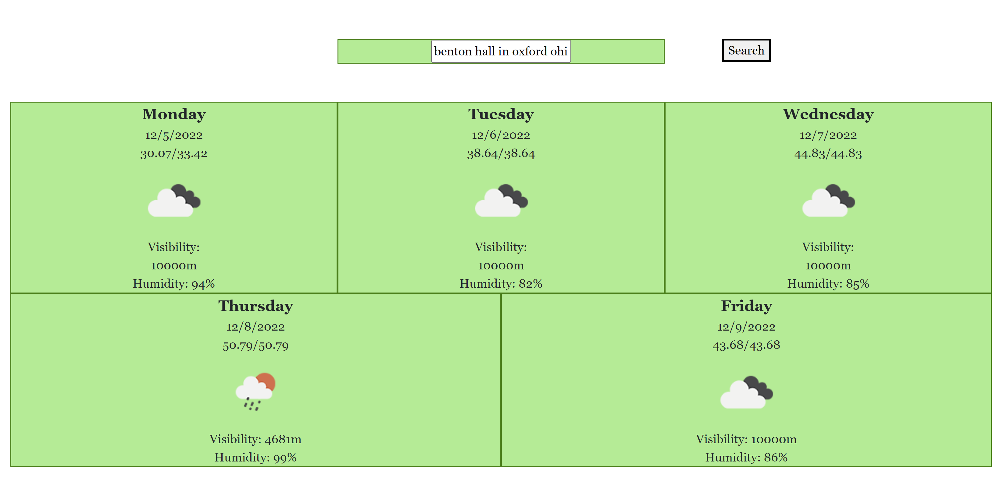

Jared Ellis
CSE383 C
Final Project Weather Forecast
12/5/2022
The system allows the user to perform a fuzzy search and see the 5-day weather forecast for that area. The system uses TomTom API to get the coordinates based off of the fuzzy search and then uses the coordinates to call the OpenWeatherMap API to find the 5-day forecast.
